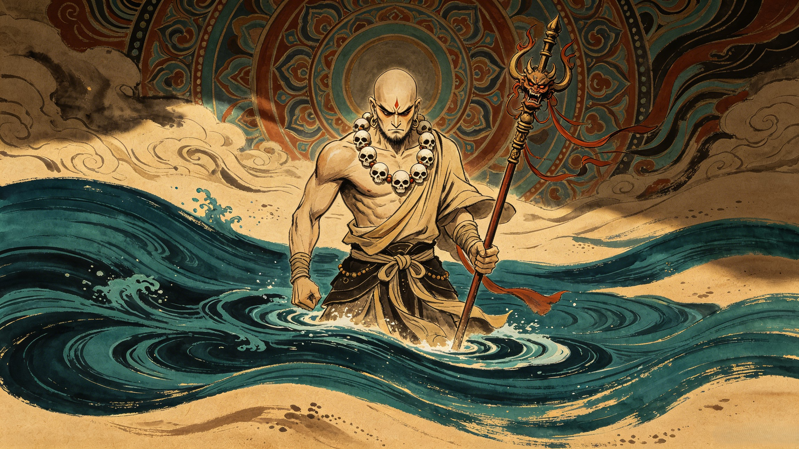

The Silent Pilgrim
沙悟净
He was the Curtain-Raising General of the Heavenly River. Then he broke a crystal dish at the Peach Banquet and was beaten with 800 lashes, banished to the Flowing Sands River, and transformed into a man-eating sand demon — until a monk and two disciples gave him a reason to become something else.
Supreme commander who parted the waters of the Heavenly River for the Jade Emperor himself. A celestial officer of high rank, trusted with the curtain that separates heaven's throne room from the mortal realm.
One broken crystal dish. Eight hundred lashes. Cast down to a river of sand where he became a red-bearded, blue-faced monster, wearing a necklace of nine skulls — the monks who tried to cross before the true pilgrim arrived.
Of all the pilgrims, only Sha Wujing never complained, never deserted, never wavered. He carried the luggage, broke up the fights, and held the team together through 14 years of demons, betrayal, and despair.
Curtain-Raising General of the Heavenly River. A single moment of carelessness at the Peach Banquet — a crystal dish shattered. The Jade Emperor's sentence was swift and brutal: 800 lashes and exile to the Flowing Sands River, where the once-noble general became a monster.
For centuries, he haunted the Flowing Sands River — 800 li wide, its waters so heavy that nothing floated. Nine holy men tried to cross. Nine skulls hung from his neck. When Guanyin offered him a path to redemption, he took it — not from faith, but from exhaustion.
He joined last, spoke least, and carried the heaviest burden. When Wukong and Bajie fought, Sha Wujing stood between them. When the monk despaired, Sha Wujing reminded him why they walked. At the journey's end, he became the Golden-Bodied Arhat — silence made sacred.
The Curtain-Raising General, the broken crystal dish, eight hundred lashes, and banishment to the Flowing Sands River — the fall that made the man.
The Demon-Quelling Staff forged by Lu Ban, the nine-skulls necklace, and the water-manipulating powers of a former celestial river commander.
From the underwater duel at Flowing Sands River to the demon hordes on the road west — the quietest pilgrim was never the weakest fighter.
The one pilgrim who never abandoned the journey. How Sha Wujing became the most underrated figure in the most famous story in Chinese literature.
Your words will be carried by the current of the Flowing Sands River — preserved in silence for all time.
Dive Deeper